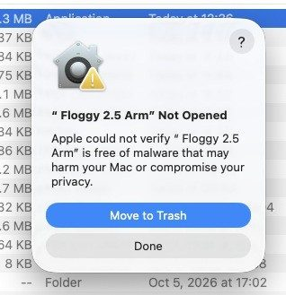
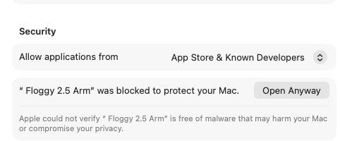
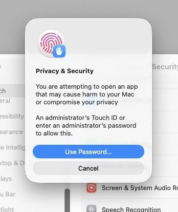
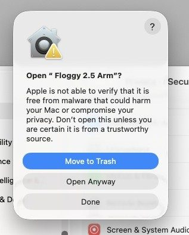

Floggy Gatekeeper
Getting Floggy open the first time

Why macOS blocks Floggy
Floggy is a free tool built by a line pilot. It isn't registered with Apple's paid developer program, so macOS can't verify who made it. The first time you open it, macOS stops it with a message such as "Floggy Not Opened" or "Apple could not verify Floggy is free of malware."
That's expected. You approve Floggy once in System Settings, and after that it opens normally. You may need to do it again when you install a new version.
What Floggy does and doesn't do: it reads only the files you save from eCrew yourself, and it never signs in to eCrew. The only website it contacts is Alaska's public flight status page, and only when you press Flifo.
1. Download the right build
Apple menu → About This Mac, and look at the Chip or Processor line:
| Your Mac shows | Download |
|---|---|
| Chip: Apple M1, M2, M3 or newer | Floggy for Apple Silicon |
| Processor: Intel | Floggy for Intel |
- Double-click the downloaded .zip to unzip it.
- Drag Floggy into your Applications folder (any folder works, but Applications is easiest to find).
2. Open Floggy the first time
macOS walks you through a few screens. The pictures show an earlier version's name; yours shows the version you downloaded.
- Double-click Floggy. macOS says it was Not Opened. Click Done (not Move to Trash).

Click Done You must close this first message before the Open Anyway button shows up in System Settings.
- Open Apple menu → System Settings → Privacy & Security and scroll down to the Security section.
- Next to "Floggy … was blocked to protect your Mac," click Open Anyway.

Privacy & Security, Security section - macOS asks for an administrator's Touch ID or password. Touch the sensor, or click Use Password… and type your Mac login password.

Approve with Touch ID or your password - One last check: click Open Anyway.

Click Open Anyway
Floggy now opens, and from then on it opens with a normal double-click.
The Open Anyway button in System Settings only appears for about an hour after you try to open Floggy. If you don't see it, double-click Floggy again, click Done, then go back to Privacy & Security.
3. Allow Floggy's permissions
The first time Floggy uses certain features, macOS asks for permission. Click Allow or OK for each one:
| Prompt | Why Floggy needs it |
|---|---|
| Files and Folders (Documents, Desktop, Downloads) | Reading the eCrew files you save, and filing them in Documents |
| Automation (Calendar, LogTen Pro) | Add Calendar in Cal - APS, and sending flights to LogTen Pro |
| Calendars | Writing events to Apple Calendar |
Clicked Don't Allow by mistake? Open System Settings → Privacy & Security, choose the category (Files and Folders, Automation or Calendars) and turn Floggy back on.
If you deny a folder permission, Floggy can't save to that folder. Floggy 2.6 shows a Save Failed notice when that happens; if saves seem to go missing, check Files and Folders first.
4. Troubleshooting
"Floggy is damaged and can't be opened"
This usually means macOS added a download flag that Open Anyway won't clear. Open Terminal (Applications → Utilities), type the line below with a space at the end, drag Floggy into the Terminal window, then press Return:
xattr -dr com.apple.quarantine
Then open Floggy normally.
macOS asks to install Rosetta
You're running the Intel build on an Apple Silicon Mac. Either click Install, or download the Apple Silicon build instead.
No Quit in the menu
On the very first launch of a new copy, Quit may be dimmed. Close the main window with the red button instead; that quits Floggy cleanly, and Quit works normally after that.
Still stuck?
Post in the Floggy Facebook group with your macOS version (Apple menu → About This Mac), your Mac type (Apple Silicon or Intel) and the exact wording of the message you see. A screenshot helps.
Home · Floggy-Go Help · Floggy for Mac · The Fleet
Unofficial tools, not affiliated with any airline or app maker.